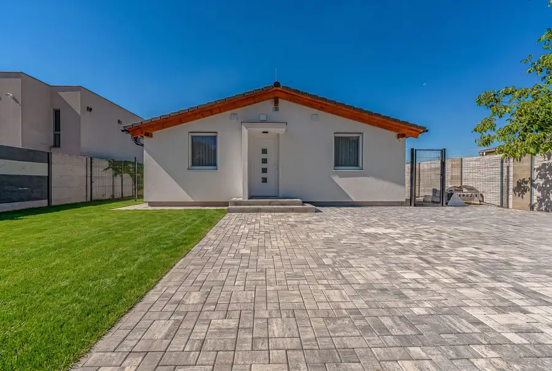
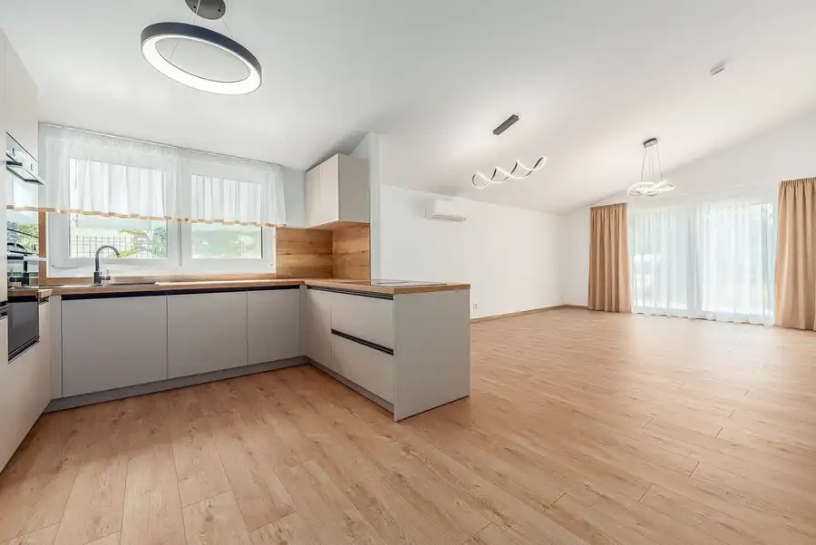
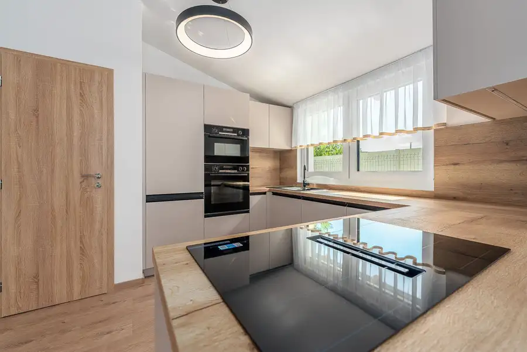
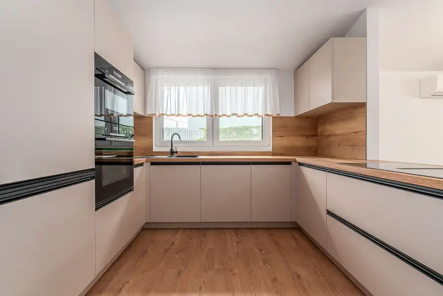
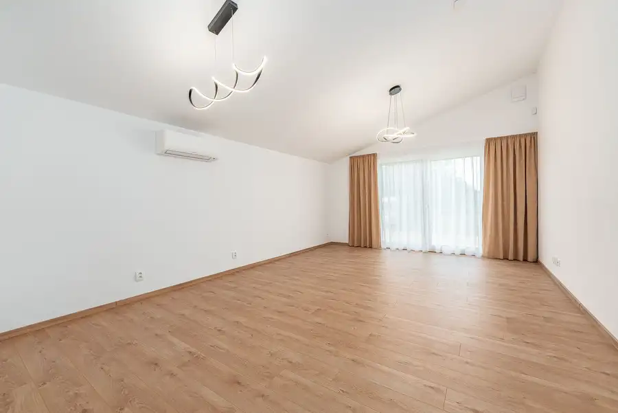
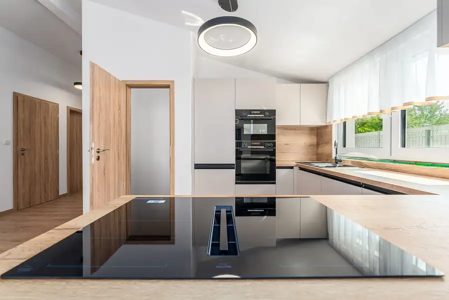
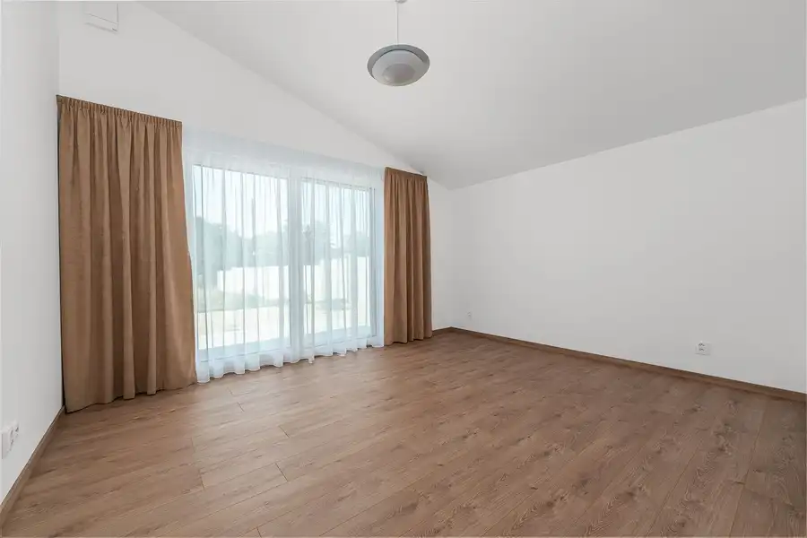

Novostavba 4-izbového bungalovu 98 m², pozemok 402 m², Komárňanská, Ružinov – Nivy
Ružinov, Bratislava







- Plocha98 m²
- StavNovostavba
- Energetická triedaA
O nehnuteľnosti
MMP Home ponúka na predaj novostavbu 4-izbového rodinného domu (bungalov) na Komárňanskej ulici v Bratislave-Ružinove, časť Nivy. Dom je kompletne dokončený na kľúč – vrátane kuchyne so spotrebičmi, svietidiel, záclon, hotovej záhrady a oplotenia. Úžitková plocha 98 m², pozemok 402 m². Kolaudácia november 2026, odovzdanie po zápise stavby do katastra.DispozíciaObývacia izba s kuchyňou a jedálenským ostrovom (33 m²) s krbom a výstupom na terasu 15 m² a do záhrady, spálňa 15 m², dve izby 12 m² a 11 m², kúpeľňa s vaňou aj sprchovým kútom (10 m²), samostatné WC, chodba 8 m², zádverie 5 m², špajza a komora. Obytné miestnosti majú zvýšené šikmé stropy. Pôdorys s výmerami je v galérii.Vybavenie a štandardKuchynská linka na mieru s ostrovom a spotrebičmi Bosch série 6 a 8: indukčná varná doska s integrovaným odsávaním, rúra s parnou funkciou, kompaktná rúra s mikrovlnkou, umývačka riadu a vstavaná chladnička s mrazničkou. V kúpeľni práčka Bosch série 8 a sušička. Sanita Villeroy & Boch, batérie Hansgrohe (sprchový set s termostatom), vaňa Kaldewei 170 cm, sprchový kút 120 × 90 cm Hüppe, veľkoformátová dlažba 120 × 60 cm. Krb s akumulačnou obstavbou, klimatizácia Daikin, elektrické vonkajšie žalúzie, zabezpečovací systém Ajax s kamerami a detektormi dymu a zaplavenia, stmievateľné LED svietidlá s diaľkovým ovládaním, záclony a závesy. Optický internet Orange privedený do domu.Technológie a energieMontovaná drevostavba Dom Snov v energetickej triede A0: elektrické podlahové kúrenie, klimatizácia Daikin, rekuperácia, plastové okná s trojsklom, elektrický ohrev vody. Rozvody 230/400 V, nová prípojka na verejný vodovod a kanalizáciu, nová asfaltová prístupová cesta.Pozemok a exteriérOplotený pozemok 402 m² s hotovým trávnikom (trávový koberec) a automatickou závlahou Hunter napájanou z vlastnej studne, terasa 15 m², spevnené plochy zo zámkovej dlažby s parkovaním pre 3 autá, vysadený judášovec kanadský.PolohaKomárňanská je pokojná ulica rodinných domov v Ružinove medzi Prievozom a Prístavným mostom, s panorámou centra mesta. Do centra (Nivy, Eurovea) niekoľko minút autom, obchody a služby v Prievoze a na Slovnaftskej, zastávky MHD v dochádzkovej vzdialenosti.Právny stav a podmienkyPozemok je na liste vlastníctva bez tiarch, vlastníkom je fyzická osoba. Stavba bude zapísaná do katastra po kolaudácii (11/2026), prevod a odovzdanie po zápise. Rezervácia možná ihneď. Kupujúci neplatí províziu – všetky podmienky vopred a písomne, bez skrytých poplatkov.Cena 629 000 € na kľúč. Obhliadky po dohode, kontaktujte Michala Ščepku, MMP Home: +421 905 783 299, scepka@mmphome.sk.
Parametre
- Druh
- Rodinný dom
- Dátum zverejnenia
- 25. 09. 2026
- Energetická náročnosť
- Nízkoenergetický
- Energetický certifikát budovy
- A
- Energie
- 120
- Orientácia
- Severovýchodná
- Plocha pozemku
- 402 m²
- Počet nadzemných podlaží
- 1
- Rok výstavby
- 2026
- Stav nehnuteľnosti
- Novostavba
- Terén pozemku
- Rovinatý
- Typ
- Predaj
- Typ konštrukcie
- Montovaná, Drevená
- Zastavaná plocha
- 110 m²
- Úžitková plocha
- 98 m²